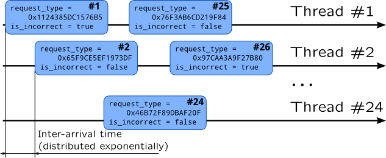

TSLoad workload generator
During this course we will need to demonstrate created scripts on a real system. We will use version 0.2 of TSLoad workload generator to do so. Its documentation and source code are available on GitHub.
Experiment configuration files are kept in JSON format: each experiment starts with directory with experiment.json file in it (it can also be accompanied by traces and timeseries). This file contains description of threadpools and workloads: their types and parameters.
{ "name": "jump_table",
"steps": {
"jt": {
"num_steps": 100,
"num_requests": 2000 }
},
"threadpools": {
"tp_jt" : {
"num_threads": 24,
"quantum": 2000000000,
"disp": { "type": "round-robin" } }
},
"workloads" : {
"jt" : {
"wltype": "jt",
"threadpool": "tp_jt",
"params": {
"num_request_types": 5000,
"request_type": {
"randgen": { "class": "lcg" } },
"is_incorrect": {
"randgen": { "class": "lcg" },
"pmap": [
{ "probability": 0.2, "value": true },
{ "probability": 0.8, "value": false }
] } },
"rqsched": {
"type": "iat",
"distribution": "exponential"
}
}
}
}
For example, defines an experiment called jump_table. workloads section defines workload jt which type is also jt. That workload have the following parameters:
-
num_request_types- set globally for entire workload - number of "request types" that will be generated;
-
request_types- generated for each request with linear congruential PRNG;
-
is_incorrect- boolean value which will be set to true for 20% requests.
It also defines request scheduler -- inter arrival time will be generated using exponential distribution. steps section defines number of requests which will be generated for this workload: 100 steps with 2000 requests in each.
threadpools section defines threadpools which will perform our workloads. It defines pool tp_jt which contains 24 threads with step period set to 2 second (as paramter quantum sets in nanoseconds). Threadpool dispatcher describes how requests will be distributed across threads and it is set to round-robin.
If we try to draw a timing diagram of the requests generated by this configuration file we will get something like .

jt workload type is defined in a separate loadable module which contains code for simulating requests. During our book we meet similar modules in exercises: proc_starter which forks processes, file_opener which randomly opens files and other modules.
Experiment is started with tseexperiment command:
# tsexperiment -e /path/to/experiment run
In this command /path/to/experiment is a directory which contains file experiment.json. That directory will also contain experiment results which can be listed with list subcommand of tseexperiment:
# tsexperiment -e /path/to/experiment list
Results may be exported to CSV format with export subcommand or some statistics may be shown with report subcommand.
It is not necessary to edit configuration file each time parameter have to be altered: run subcommand has -s option. To provide its argument, check flattened names of configuration parameters with -l option of subcommand show:
# tsexperiment -e /opt/tsload/var/tsload/mbench/jt show -l name=jump_table steps:jt:num_steps=100 steps:jt:num_requests=2000 ...
So, to change number of per-step requests to 500, you should call tsexperiment with following options:
# tsexperiment -e /opt/tsload/var/tsload/mbench/jt run \
-s steps:jt:num_requests=500
In some cases we will need to use hardware device names in experiment configuration, i.e. to bind threads to CPU cores. To get their names, run tshostinfo command:
tshostinfo -x